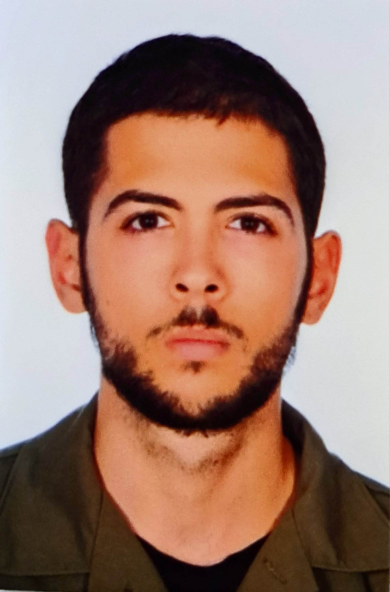

Resume
Basic Personal Info
- Full Name : Panagos Theodoros
- Date Of Birth : 12 February 1997
- Gender : Male
- Nationality : Greek

Objective Statement
- I like to be creative and solving problems.
- My goal is to keep learning things related to ux design-development.
- My current goal is to learn web dev
Education
- I am currently studying at Department of Product & Systems Design Engineering
on Aegean University which is in Syros greek island.
- high school graduate
Work Experience
Until the moment i am writing the resume ,
i only have experience in university assignments-projects ( no real world-job projects ).
- A project i used Figma tool ,
in order to design the user interface + prototype, of an hypothetical mobile app that displays Points Of Interest ( Landmarks, Beaches, Restaurants etc ) of Syros island.
There were some specific requirements related to what this app must contain-must do, which had impact the final ui design-prototyping i had implemented.
- Employers : University assignment-project
- Dates : March-May (2022)
- Responsibilities: Use figma to design the basic ui-prototyping of a mobile POIs app
Below are the links to see more for this project :
- In the above asignment ( POIs app), the second part of it ,was to use Android-Java code to implement a functional prototype of it.
- Two projects i used Unity game engine and c# programming language to create 2 prototype games.
- A 2d platform game with some relation to covid pandemic
- Employers : University assignment-project
- Dates : June-September (2021)
- Responsibilities: Use Unity engine-c# programming to implement the basic functionality-prototype of a 2d game related to pandemic
- Here is the link to see a video of the final implementation . Video of my 2d platform game
- Here you can download and play this game . My 2d platform game
-
A 3d game prototype, of my choice , with some educational purpose
- Employers : University assignment-project
- Dates : March-June (2021)
- Responsibilities: Use Unity engine-c# programming to implement a 3d educational game prototype
- Here is the link to see a video of the final implementation . My first 3d Unity game prototype
Skills
- Figma
- Design Thinking-Service Design ( User Research,Empathize, Design,Prototyping, Evaluation)( Methods-Tools)
- Unity Engine-C# programming laguage
- Android-Java programming language
Certificates :
- English language (ECCE) = B2
Other